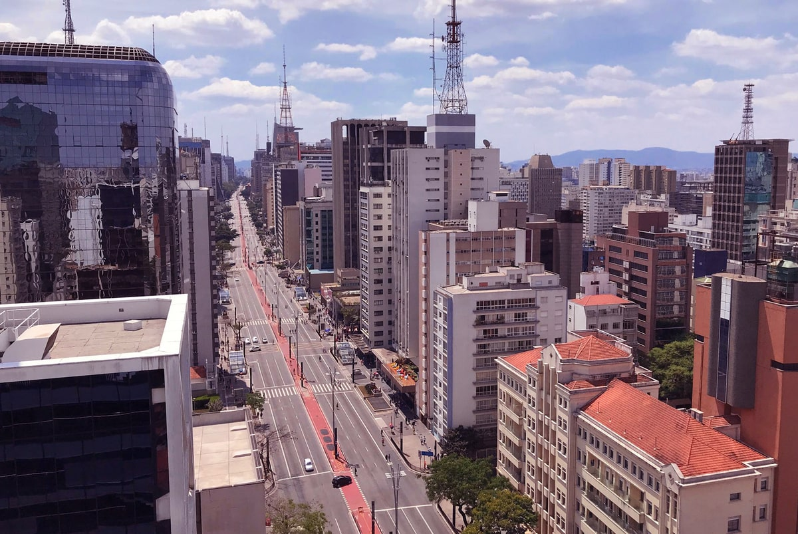
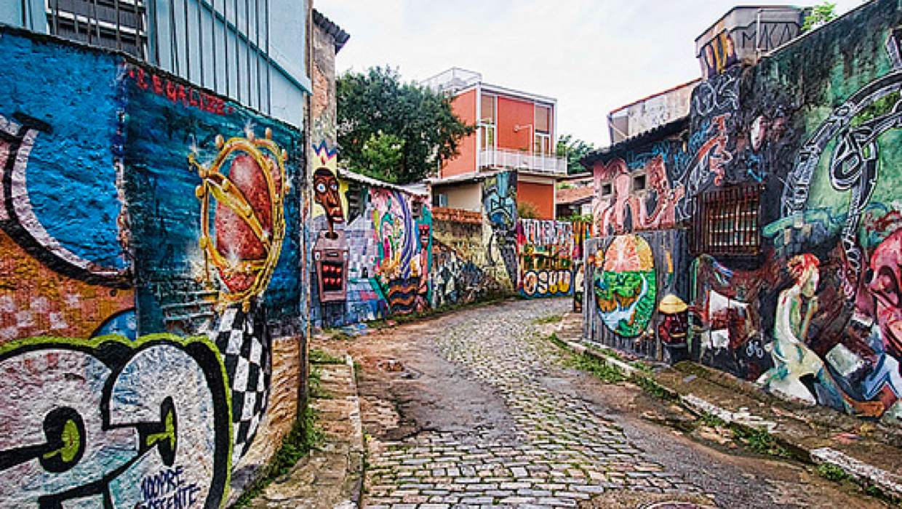

Passaear na Avenida Paulista
Um dos principais centros financeiros da cidade, a avenida paulista também possui diversas opções de entretenimento. Endereço do Museu da Arte de São Paulo, do Teatro Gazeta e muitos outros, a região é de fácil acesso graças as diversas linhas de ônibus que cruzam a avenida e a linha de metrô que passa por de baixo dela
os bares da Vila Madalena
Depois de um dia de trabalho, nada melhor do que um bom chopp, um petísco e uma conversa em uma mesa de bar. Opções de sobra na região das região das ruas Aspicuelta, Fradique Coutinho e wisad.
O Parque do Ibirapuera

Um dos cartões postais da cidade, o parque dispõe de mais de 1,5 km² de área verde, lagos artificiais e pistas de cooper e ciclismo. E se isso não fosse o sificiente, o parque costuma ser palco de diversos eventos culturais ao longo do ano.